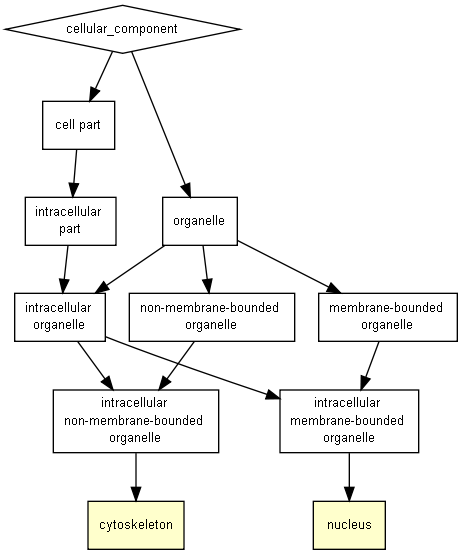

P-value color scale
| > 10-3 |
10-3 to 10-5 |
10-5 to 10-7 |
10-7 to 10-9 |
< 10-9 |

| GO term |
Description |
P-value |
FDR q-value |
Enrichment (N, B, n, b) |
Genes |
| GO:0005856 |
cytoskeleton |
9.89E-5 |
1.9E-1 |
6.11 (18319,807,26,7) |
[+] Show genes
ENAH - enabled homolog (drosophila)
PCLO - piccolo presynaptic cytomatrix protein
FMN1 - formin 1
JMY - junction mediating and regulatory protein, p53 cofactor
LMOD2 - leiomodin 2 (cardiac)
RAPH1 - ras association (ralgds/af-6) and pleckstrin homology domains 1
WASF1 - was protein family, member 1
|
| GO:0005634 |
nucleus |
4.2E-4 |
4.04E-1 |
2.17 (18319,5193,26,16) |
[+] Show genes
YLPM1 - ylp motif containing 1
ZNF341 - zinc finger protein 341
MEX3C - mex-3 rna binding family member c
SRPK2 - srsf protein kinase 2
KDM6B - lysine (k)-specific demethylase 6b
NAF1 - nuclear assembly factor 1 ribonucleoprotein
JMY - junction mediating and regulatory protein, p53 cofactor
ASXL3 - additional sex combs like 3 (drosophila)
DIAPH3 - diaphanous-related formin 3
FBXO11 - f-box protein 11
PRR11 - proline rich 11
FOXK1 - forkhead box k1
FMN1 - formin 1
DOT1L - dot1-like histone h3k79 methyltransferase
FASLG - fas ligand (tnf superfamily, member 6)
ZFHX3 - zinc finger homeobox 3
|
Species used: Homo sapiens
The system has recognized 19375 genes out of 20107 gene terms entered by the user.
19375 genes were recognized by gene symbol and 0 genes by other gene IDs .
198 duplicate genes were removed (keeping the highest ranking instance of each gene) leaving a total of 19177 genes.
Only 18319 of these genes are associated with a GO term.
The GOrilla database is periodically updated using the GO database and other sources.
The GOrilla database was last updated on Jun 23, 2018
This results page will be available on this site for one month from now (until
Jul 25, 2018
). You can bookmark this page and come back to it later.
'P-value' is the enrichment p-value computed according to the mHG or HG model. This p-value is not corrected for multiple testing of 1922 GO terms.
'FDR q-value' is the correction of the above p-value for multiple testing using the Benjamini and Hochberg (1995) method.
Namely, for the ith term (ranked according to p-value) the FDR q-value is (p-value * number of GO terms) / i.
Enrichment (N, B, n, b) is defined as follows:
N - is the total number of genes
B - is the total number of genes associated with a specific GO term
n - is the number of genes in the top of the user's input list or in the target set when appropriate
b - is the number of genes in the intersection
Enrichment = (b/n) / (B/N)
Genes: For each GO term you can see the list of associated genes that appear in the optimal top of the list.
Each gene name is specified by gene symbol followed by a short description of the gene
Back to the GOrilla main page